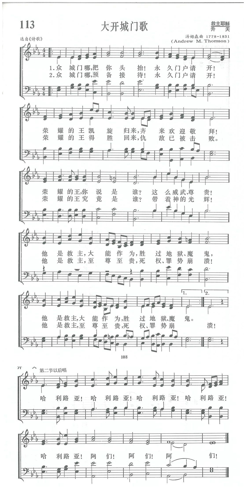

|
|
讚美詩(新編) |
|
7 Ye gates lift up your heads on high; 9 Ye gates, lift up your heads; ye doors, Coda: |
|
|
https://www.zanmeishige.com/tab/13786.html?songbook=1&index=113
 Ye gates, lift up your heads on high
|
|
|
|
|


https://www.youtube.com/watch?v=dnNF0RJUFKQ&list=PLcOMG0FdMLMASkcGa9EGej2EJdzKRG6bR&index=114 -
https://youtu.be/9pvOUSBoVTM -
Ye Gates, Lift up Your Heads (Psalm 24b) · Crown & Covenant
https://youtu.be/N2GHua7768s
| Text: | Psalm XXIV. 7-10 |
| Tune: | ST. GEORGE'S, EDINBURG |
| Composer: | Rev. Andrew Thomson |
第113首 大开城门歌 Ye gates，lift up your heads on high _韵文诗篇
经文：“众城门哪，你们要抬起头来!永久的门户，你们要被举起!那荣耀的王将要进来”(诗24：7)。
这首诗的词和曲与苏格兰教会和爱丁堡圣乔治大教堂有密切的联系。按苏格兰教会(国教)从教派来说是长老会。按长老会传统，相当长的一段时期，只允许在礼拜堂里唱颂圣经词句，于是有多种的英译韵文诗篇。
这首诗乃是采用劳斯(1579—1659)和巴顿(1597一1678)英译诗篇第24篇9至10节：“众城门哪!你们要抬起头来!永久的门户，你们要被举起，那荣耀的王将要进来”。直到今日，苏格兰长老会在圣餐大典中，当牧师和长老列队捧着饼和酒作为供献之物时，全堂起立同唱这首诗，以表欢迎荣耀之王的诚意。
这首诗所用的调乃汤姆森(A.M.Thomson，1779—1831)所谱。汤姆森于爱丁堡大学毕业后，任中学校长多年，1808年献身为主，专任牧师。先后担任了两个堂会的牧师，以他的响亮歌声和雄辩口才闻名英伦三岛。1814年爱丁堡市议会邀请他担任该市新落成的圣乔治大教堂首任牧师。汤氏克尽其职，辛勤工作，除牧养群羊外，对于促进教会音乐尤为努力，编辑、创作、指挥都成绩卓著。所编《教会圣乐》至今仍沿用不绝。
这首曲的调名为《爱丁堡的圣乔治(ST.GEORGE OF EDINBURGH)》
https://www.xueshengshi.com/?p=6352